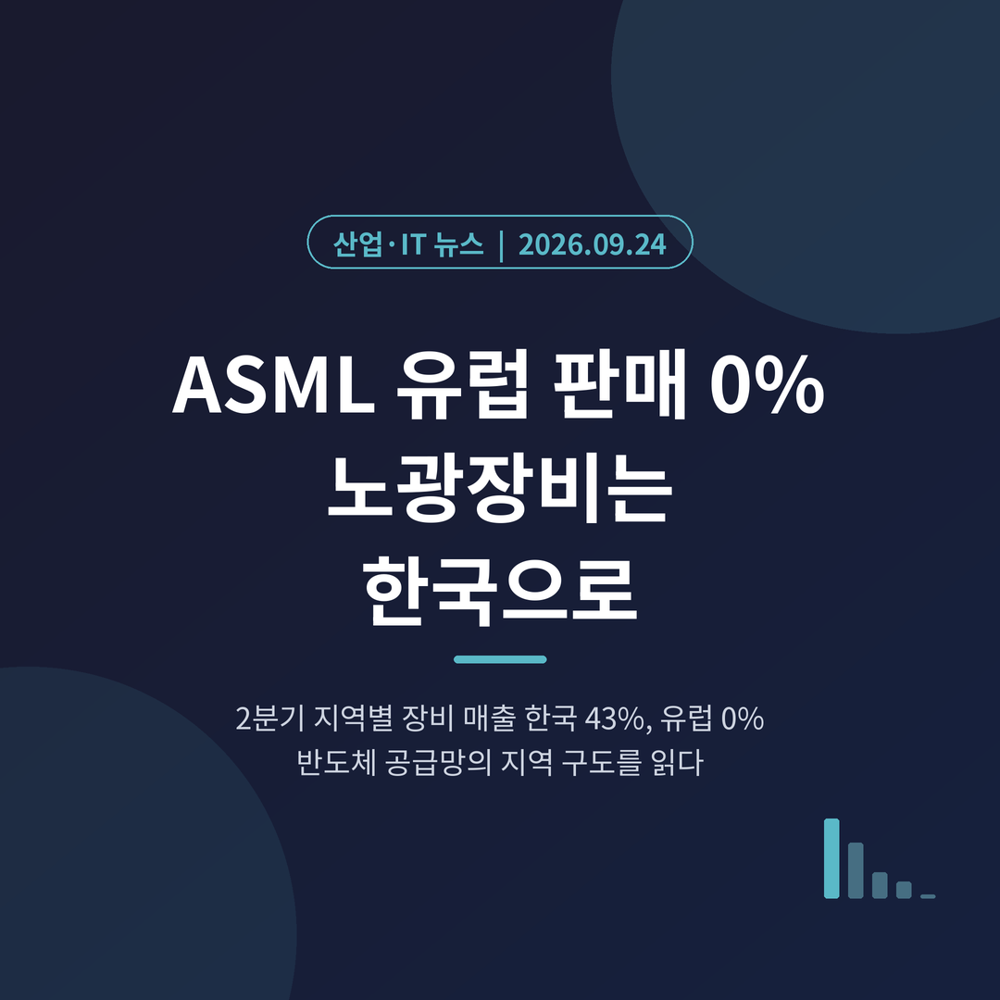
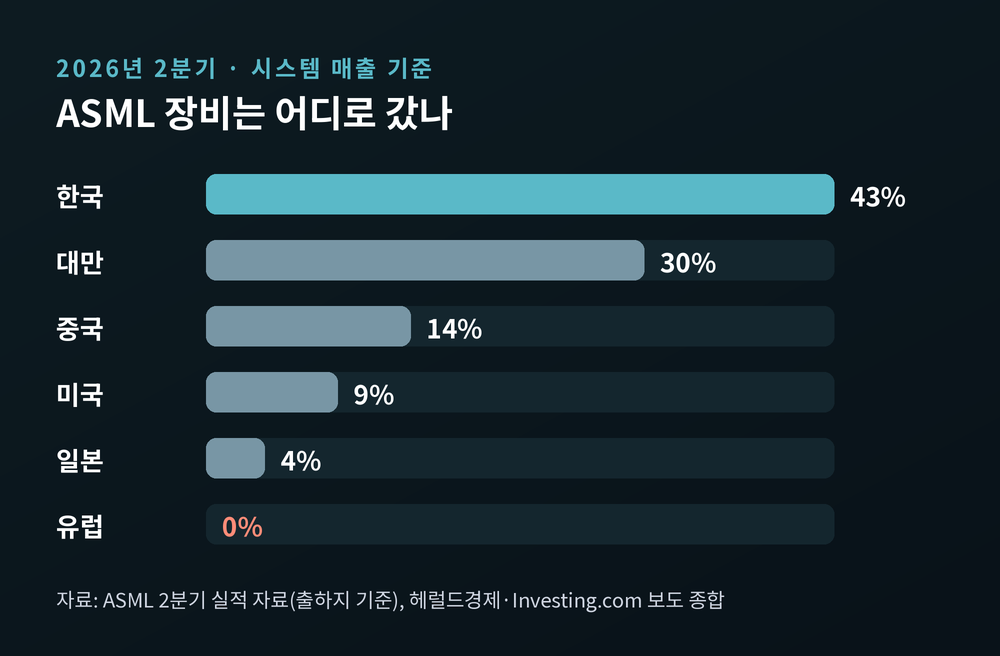
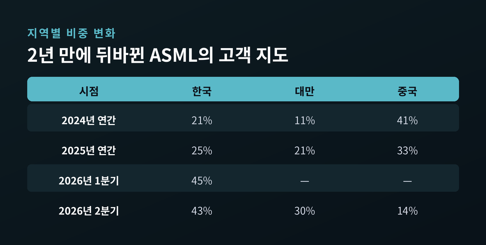
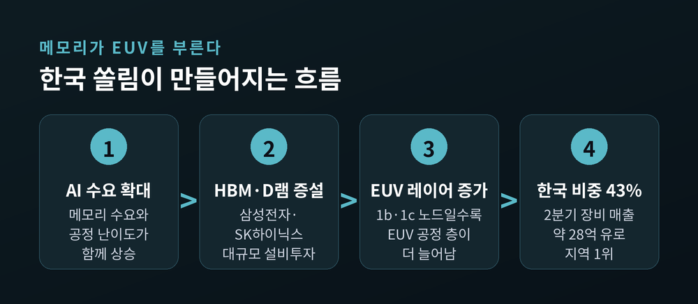
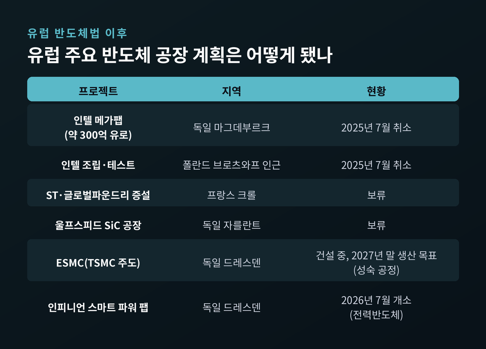
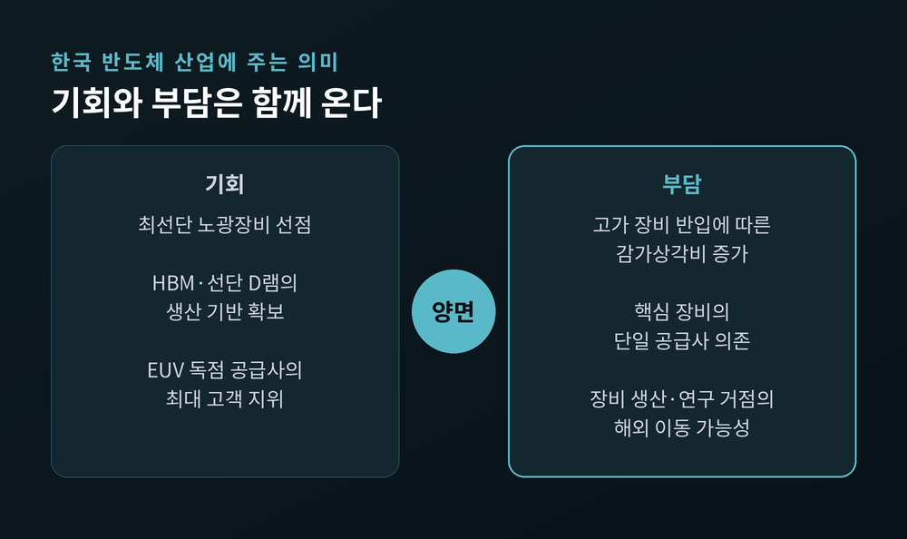

ASML 유럽 판매 0%, 첨단 노광장비가 한국으로 쏠리는 이유

오늘은 네덜란드 ASML이 안방인 유럽에서 장비를 한 대도 팔지 못했다는 소식을 다뤄 보려 합니다. 같은 기간 ASML 장비 매출의 40% 이상은 한국에서 나왔습니다. 두 숫자가 함께 말해 주는 반도체 공급망의 지역 구도를 정리해 보겠습니다.
세 줄 요약
- ASML의 2026년 2분기 지역별 시스템 매출에서 유럽 비중은 0%였습니다. 한국이 43%로 1위, 대만 30%, 중국 14%, 미국 9%가 뒤를 이었습니다.
- 한국 쏠림은 삼성전자와 SK하이닉스의 메모리 증설, 특히 HBM과 선단 D램에 EUV 공정이 더 많이 들어가는 흐름에서 비롯됐습니다.
- 유럽의 공백은 반도체법이 새 공장을 끌어오지 못한 결과입니다. 인텔 마그데부르크 팹 취소가 상징적인 장면입니다.
"유럽에서는 아무것도 팔지 않는다"
발언의 주인공은 프랑크 헤임스케르크 ASML 수석부사장입니다. 글로벌 공공정책을 총괄하는 인물입니다.
그는 9월 21일 암스테르담의 한 행사에서 이렇게 말했습니다. 유럽에서는 지금 아무것도 팔고 있지 않으며, 그 이유는 유럽이 투자하지 않고 칩 공장도 지어지지 않기 때문이라는 것입니다. 블룸버그가 이튿날 이를 보도했고, 국내 언론도 23~24일 잇따라 전했습니다.
말만 그런 것이 아닙니다. 숫자가 이미 같은 이야기를 하고 있었습니다.
ASML이 7월 15일 발표한 2분기 실적에서 유럽의 시스템 매출 비중은 0%였습니다. 1년 전만 해도 1% 안팎이었던 비중이 아예 사라진 것입니다. 유럽 시가총액 1위 기업이 정작 자기 대륙에서는 고객을 찾지 못하고 있는 셈입니다.
헤임스케르크 부사장은 한 걸음 더 나아갔습니다. 생산을 늘려야 하는데 그 전부를 네덜란드에서 하지는 않겠다고 했습니다. 중국과 인도는 가장 붉은 레드카펫을 깔고 공장을 지어 달라고 요청하고 있고, 미국은 현재 약 25%인 미국 내 연구 비중을 절반으로 늘릴 수 있는지 물어 왔다고 전했습니다. ASML은 지난 5월 인도 타타 일렉트로닉스와도 협력 협약을 맺었습니다.
유럽을 향한 경고이자, 공급 거점이 움직일 수 있다는 신호로 읽히는 대목입니다.
숫자로 본 2분기 지역 구도
먼저 전체 규모부터 보겠습니다. ASML의 2분기 총매출은 약 93억 유로, 순이익은 약 29억 유로였습니다. 이 가운데 서비스와 업그레이드를 뺀 장비 매출은 약 66억 유로입니다.

한국 비중 43%를 금액으로 바꾸면 약 28억 유로입니다. 1분기에도 한국은 45%로 1위였고, 금액도 약 28억 유로로 비슷했습니다. 상반기 누적으로도 한국이 1위, 대만이 2위, 중국이 3위입니다.
이 구도가 새롭게 느껴지는 이유는 불과 2년 전과 비교하면 분명해집니다.

예전엔 ASML의 최대 고객 지역이 중국이었습니다. 2024년 중국 비중은 41%, 한국은 21%였습니다. 지금은 한국이 40%대 중반을 지키고, 중국은 14%까지 내려왔습니다. 대만도 11%에서 30%로 올라섰습니다.
기술별로 보면 2분기 장비 매출의 57%가 EUV였습니다. 1분기 66%보다는 낮지만 여전히 가장 큰 몫입니다. 최종 용도로는 로직 51%, 메모리 49%로 거의 반반이었습니다.
왜 한국인가 — 메모리가 EUV를 부른다
한국 쏠림의 동력은 메모리입니다.
크리스토프 푸케 ASML 최고경영자는 2분기 실적 발표에서 D램 부문에 "퍼펙트 스톰"이 만들어지고 있다고 표현했습니다. 메모리 수요 증가와 공정 난이도 상승이 겹쳤다는 뜻입니다. 그는 올해 ASML의 메모리 관련 매출이 전년보다 75% 이상 늘 것으로 내다봤습니다.
구조는 이렇습니다.

HBM은 공정 특성상 같은 양을 만들 때 더 많은 웨이퍼가 필요합니다. 범용 D램도 최신 공정으로 갈수록 EUV와 액침 노광을 거치는 층이 늘어납니다. 푸케 CEO는 현재의 1b 노드와 앞으로 주력이 될 1c 노드가 더 많은 EUV 레이어를 쓴다고 설명했습니다.
즉 삼성전자와 SK하이닉스가 증설을 하면, 같은 증설이라도 예전보다 더 많은 노광장비가 필요해지는 구조입니다. EUV를 만드는 곳은 ASML 한 곳뿐입니다. 한국이 ASML의 최대 시장이 된 것은 자연스러운 결과에 가깝습니다.
ASML도 이 수요에 맞춰 움직이고 있습니다. 2026년 약 65대 수준인 EUV 생산능력을 2027년에 30% 늘리고, 2028년 추가 30% 증설도 검토하고 있습니다. 연간 매출 전망은 430억~450억 유로로 올려 잡았습니다.
중국이 줄어든 자리
중국 비중의 하락은 수요보다 규제의 영향이 큽니다.
ASML의 최첨단 EUV 장비는 수년째 이어진 수출 통제로 중국에 출하되지 않습니다. ASML은 올해 초 중국 비중이 총매출의 약 20%로, 2025년 33%에서 낮아질 것이라고 제시했습니다. 2분기 시스템 매출 기준으로는 14%였습니다.
여기에 지난 4월 미국 의회에서는 초당적 법안인 'MATCH Act'가 발의됐습니다. 중국에 대한 액침 DUV 장비 수출을 전면 금지하고, 이미 설치된 장비의 유지보수까지 제한하는 내용입니다. 발의 소식에 ASML 주가는 하루 약 2.6% 내렸습니다. 법안의 최종 통과 여부는 아직 지켜봐야 합니다.
중국이 비운 자리를 채운 것이 한국과 대만입니다. 유럽은 그 경쟁에 아예 참여하지 못했습니다.
유럽은 왜 비었나 — 반도체법의 한계
유럽연합은 2023년 9월 반도체법을 시행했습니다. 2030년까지 세계 반도체 생산에서 차지하는 비중을 가치 기준 20%로 두 배 늘리겠다는 목표였습니다.
결과는 기대에 한참 못 미쳤습니다. 유럽감사원은 2025년 4월 보고서에서 이 목표 달성이 "매우 어렵다"고 결론 내렸습니다. 2022년 9.8%였던 점유율이 2030년에도 약 11.7%에 그칠 것으로 봤습니다. 20%를 채우려면 약 2,510억 유로가 필요하다는 추정도 붙였습니다.
가장 뼈아픈 장면은 인텔의 철수였습니다.

인텔은 2025년 7월 독일 마그데부르크에 짓기로 했던 약 300억 유로 규모의 메가팹 계획을 접었습니다. 폴란드 브로츠와프 인근의 조립·테스트 시설도 함께 취소됐습니다. 독일은 99억 유로, 폴란드는 17억 유로의 보조금을 약속한 상태였습니다. 립부 탄 인텔 CEO는 고객 확약이 부족하다는 점을 주된 이유로 들었습니다.
프랑스 크롤의 증설 계획, 독일 자를란트의 실리콘카바이드 공장 계획도 보류됐습니다.
물론 진행 중인 곳도 있습니다. TSMC가 보쉬·인피니언·NXP와 세운 ESMC는 드레스덴에서 2027년 말 생산을 목표로 공장을 짓고 있습니다. 인피니언의 드레스덴 전력반도체 공장은 올해 7월 문을 열었습니다.
다만 두 곳 모두 차량·산업용 성숙 공정이나 전력반도체 중심입니다. AI 가속기나 HBM처럼 EUV를 대량으로 쓰는 최선단 공장과는 성격이 다릅니다. 유럽에 공장이 전혀 없는 것은 아니지만, ASML의 핵심 장비를 살 공장이 없다는 점이 문제입니다.
근본 원인으로는 수요가 꼽힙니다. 유럽에는 하이퍼스케일러와 선단 팹리스, AI 가속기 수요가 미국이나 동아시아만큼 모여 있지 않습니다. 보조금으로 비용 차이는 줄일 수 있어도 공장을 채울 고객까지 만들어 주지는 못한다는 지적이 나오는 이유입니다.
유럽집행위원회는 2026년 6월 3일 '반도체법 2.0' 규정안을 내놓았습니다. 적격 프로젝트의 인허가를 최대 12개월 안에 결정하고, 칩 제조사와 유럽 수요 산업을 연결하는 장치를 새로 두는 내용입니다. 헤임스케르크 부사장의 이번 발언은 이 개편 논의가 한창인 시점에 나왔습니다.
한국에는 기회이자 숙제
한국 입장에서 이 구도는 양면적입니다.

좋은 쪽부터 보면, 세계 유일의 EUV 공급사가 만드는 장비가 한국 공장으로 가장 많이 들어오고 있습니다. 최선단 메모리를 만들 물리적 기반을 먼저 확보했다는 뜻입니다. HBM과 선단 D램의 수율을 안정시키는 속도에도 도움이 됩니다.
부담도 분명합니다. 고가 장비가 대량으로 들어오면 감가상각비가 가파르게 늘어납니다. AI 인프라 투자가 잠시라도 숨을 고르거나 고금리가 길어지면, 이 고정비가 실적의 변동 폭을 키울 수 있다는 지적이 나옵니다.
공급망 측면의 과제도 남습니다. 핵심 장비를 한 회사에 의존하는 구조는 그대로입니다. 그 회사가 생산과 연구 거점을 미국·인도 등으로 넓히겠다고 공개적으로 말하고 있습니다. 장비를 얼마나 빨리, 얼마나 안정적으로 받느냐가 앞으로 더 중요한 경쟁력이 될 것입니다.
아직 판단하기 이른 부분도 있습니다. 한국 비중 43%는 한 분기의 숫자이고, 대만과의 격차도 크지 않습니다. 증설 주기가 한 바퀴 돌고 나면 비중은 얼마든지 다시 바뀔 수 있습니다.
앞으로 지켜볼 대목
첫째, ASML의 3분기 실적입니다. 회사는 3분기 매출을 110억~120억 유로로 제시했습니다. 한국 비중이 40%대를 유지하는지, 대만이 격차를 좁히는지가 관심사입니다.
둘째, 반도체법 2.0의 입법 속도입니다. 현재 유럽 이사회와 의회에서 논의가 진행 중입니다. 인허가 단축이 실제 착공으로 이어질지가 유럽 비중 회복의 관건입니다.
셋째, 미국의 대중국 규제입니다. MATCH Act 같은 추가 규제가 현실화되면 중국 비중은 더 낮아지고, 지역 구도의 쏠림은 한층 뚜렷해질 수 있습니다.
넷째, High-NA EUV의 도입 경쟁입니다. 인텔은 이미 18A 공정 일부 레이어에 이를 적용했고, ASML은 주요 고객 모두와 양산 도입을 논의하겠다고 밝혔습니다. 차세대 장비를 어느 지역이 먼저 가져가느냐가 다음 지역 구도를 결정할 것입니다.
마지막으로 한 가지만 덧붙이겠습니다.
유럽 판매 0%라는 숫자는 유럽의 문제로만 읽히기 쉽습니다. 하지만 같은 표의 반대편에는 한국 43%가 적혀 있습니다. 장비가 가는 곳이 곧 다음 세대 반도체가 만들어지는 곳입니다.
"노광장비의 행선지가 반도체 지도의 예고편이다."
지금 그 예고편의 첫 장면에 한국이 서 있냐고 물으신다면, 그렇다고 답하겠습니다. 다만 그 자리를 지키는 일은 장비를 들여오는 것보다 훨씬 긴 이야기일 것입니다.